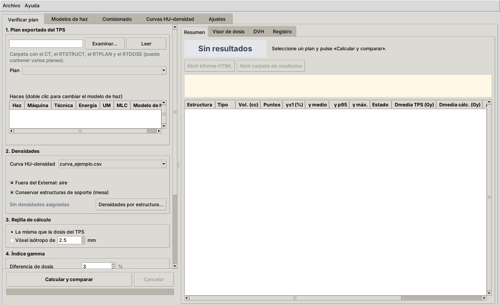
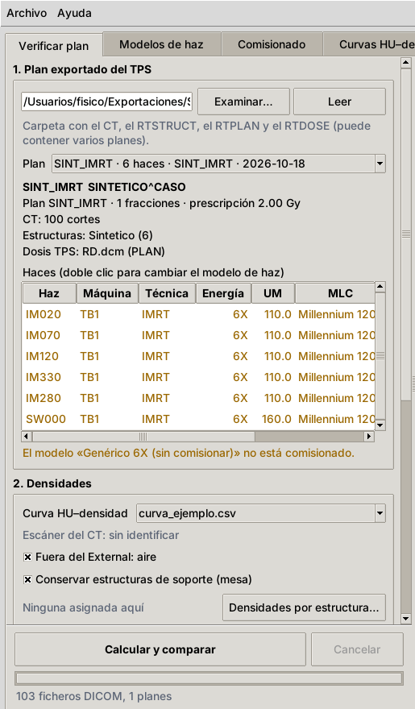
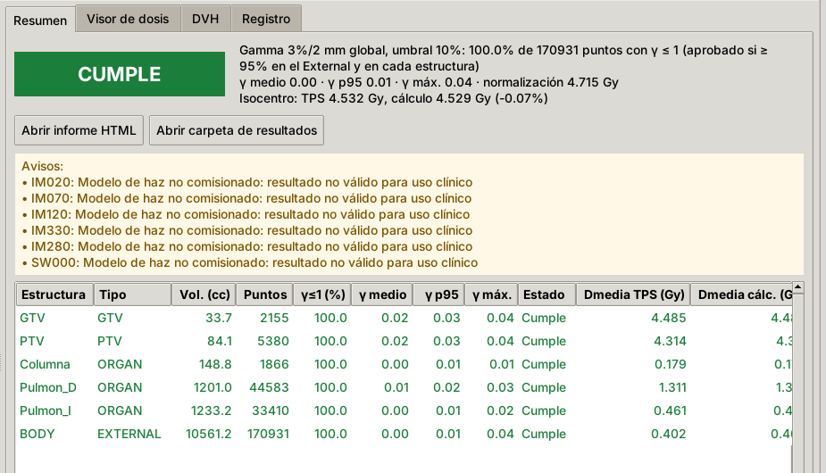
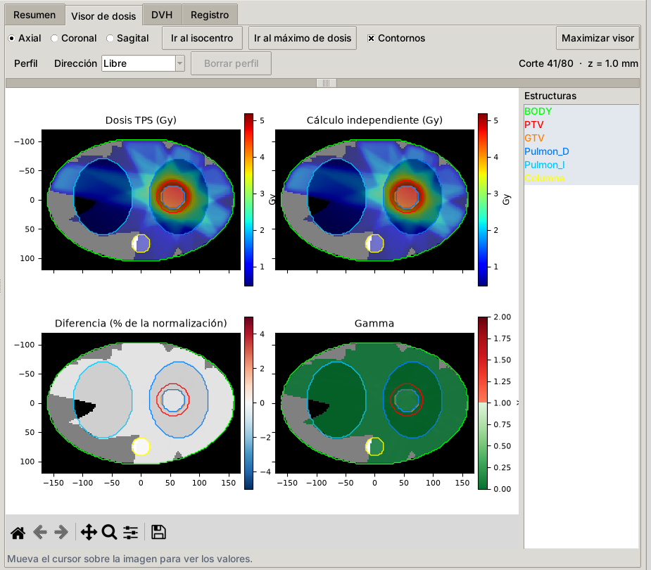
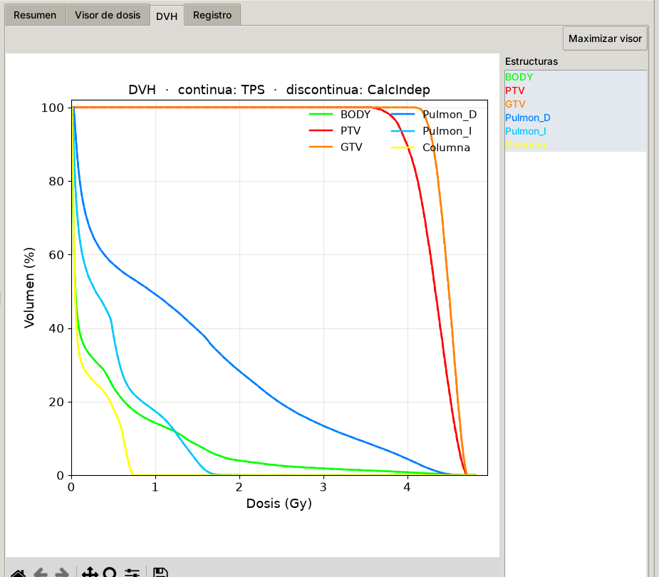
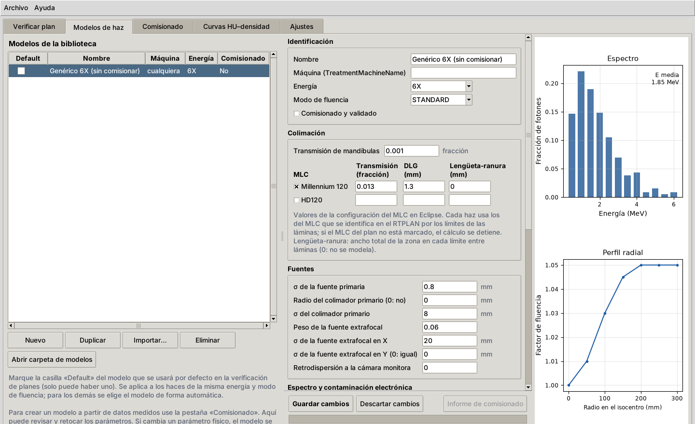
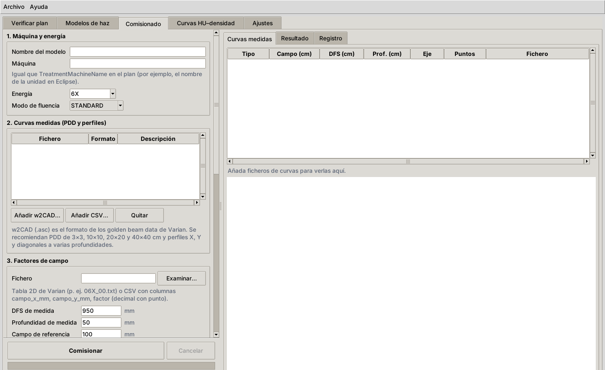
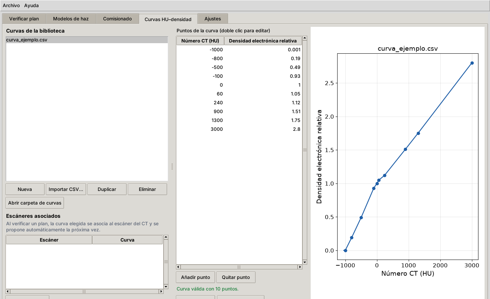
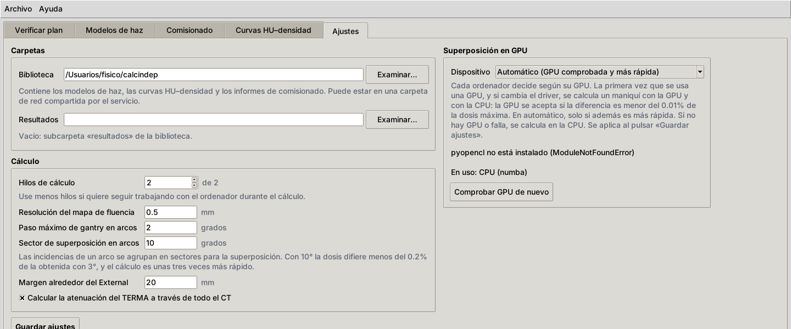

CalcIndep recalcula la dosis de un plan de radioterapia externa con fotones de forma independiente del planificador y compara las dos distribuciones. Sirve como control de calidad específico del paciente antes del tratamiento.
Admite 3D-CRT, IMRT (step-and-shoot y ventana deslizante) y VMAT con los MLC Millennium 120 y HD120 de Varian. Todo se maneja desde una ventana con cinco pestañas; no hace falta usar la consola.
El paquete es un fichero ZIP (por ejemplo, el que se descarga del repositorio de GitHub con Code → Download ZIP) con la carpeta del programa:
| Fichero o carpeta | Para qué sirve |
|---|---|
LEEME_INSTALACION.txt | Instrucciones de instalación resumidas. |
instalar_windows.bat | Instalador. Se ejecuta una vez (y otra vez al actualizar). |
instalar_gpu.bat | Instalación opcional de la superposición en GPU. |
CalcIndep.pyw | Programa principal (lo abre el acceso directo). |
docs\Manual_CalcIndep.pdf | Este manual. Se abre con la tecla F1. |
calcindep\ | Código del programa. |
data\ | Kernels de EDKnrc, modelo de haz genérico 6X y curva HU–densidad de ejemplo. |
examples\ | Datos de haz sintéticos y configuraciones de ejemplo. |
README.md, README.en.md | Documentación técnica, en español y en inglés. |
LICENSE, THIRD_PARTY_NOTICES.txt | Licencia del programa (MIT) y licencias de los componentes de terceros. |
environment.yml, requirements.txt | Lista de paquetes de Python que usa el instalador. |
Descargue el instalador de Windows desde conda-forge.org/download y ejecútelo con
las opciones por defecto: Just Me (no necesita permisos de administrador) y la carpeta que propone
(C:\Users\<usuario>\miniforge3).
Se recomienda Miniforge porque descarga los paquetes solo del canal libre conda-forge. Los paquetes del canal por defecto de Anaconda requieren una licencia de pago en organizaciones de 200 empleados o más, lo que incluye a la mayoría de los hospitales. Si ya tiene Anaconda o Miniconda, el instalador los usa y el entorno de CalcIndep se crea igualmente con conda-forge.
.bat.C:\CalcIndep o Documentos\CalcIndep.Evite rutas con tildes, eñes o caracteres especiales y no ejecute el programa desde dentro del ZIP ni desde la carpeta de Descargas. El acceso directo apunta a la carpeta donde se instala: si después la mueve, ejecute de nuevo el instalador.
instalar_windows.batHaga doble clic en instalar_windows.bat. Si aparece el aviso «Windows protegió su PC», pulse
Más información → Ejecutar de todas formas.
El instalador hace lo siguiente, sin pedir nada más:
calcindep con los paquetes necesarios (5–15 minutos, según la
conexión).CalcIndep.bat y CalcIndep_diagnostico.bat. Este último abre el programa con consola
para resolver problemas.Al terminar muestra «Instalación terminada». Pulse una tecla para cerrar la ventana.
Si el proxy del hospital impide que conda descargue paquetes, el instalador lo intenta con el entorno base y pip. Si tampoco funciona, consulte el capítulo .
Haga doble clic en el acceso directo CalcIndep del escritorio. Primero aparece una ventana de carga; la primera vez puede tardar uno o dos minutos. En la barra inferior de la ventana principal se lee «Preparando el motor de cálculo…» y, cuando termina, «Motor de cálculo listo · superposición en CPU» (o en GPU).
La primera vez se crea la biblioteca en Documentos\calcindep con el modelo genérico 6X y la
curva de ejemplo (apartado ).
Si el ordenador tiene una tarjeta gráfica con OpenCL (incluidas muchas gráficas integradas de Intel), la superposición puede hacerse en ella. En un portátil con Intel HD Graphics 520, un VMAT de dos arcos pasó de 590 s a 215 s.
instalar_windows.bat.instalar_gpu.bat. Añade el paquete pyopencl sin cambiar los demás,
comprueba que el programa sigue funcionando y compara la GPU con la CPU.Si el ordenador no tiene GPU, o no se ejecuta este paso, CalcIndep calcula en la CPU. Los detalles están en el capítulo .
instalar_windows.bat (actualiza el entorno si hace falta).Los modelos de haz, las curvas, los resultados y los ajustes no están en la carpeta del programa, así que se
conservan. La versión en uso aparece en el título de la ventana, en Ayuda → Acerca de CalcIndep, en
cada informe y en cada resumen.json.
conda env remove -n calcindep.%APPDATA%\calcindep.Documentos\calcindep) contiene sus modelos, curvas y resultados. Bórrela solo
si ya no los necesita.
| Pestaña | Para qué sirve |
|---|---|
| Verificar plan | Calcular un plan y compararlo con la dosis del planificador. Es la que se usa a diario. |
| Modelos de haz | Revisar, editar, importar y elegir el modelo por defecto. |
| Comisionado | Crear un modelo de haz a partir de las medidas de la máquina. |
| Curvas HU–densidad | Crear y editar curvas y asociarlas a los escáneres CT. |
| Ajustes | Carpetas, opciones de cálculo y uso de la GPU. |
Menú Archivo: abrir la carpeta de la biblioteca o la de resultados, y salir.
Menú Ayuda: Manual de usuario (PDF), que también se abre con la tecla F1;
Abrir carpeta de ajustes y registro, donde están los ficheros que conviene enviar si hay un error; y
Acerca de CalcIndep, con la versión.
La barra inferior muestra el estado del motor de cálculo y el dispositivo que hace la superposición (CPU o GPU).
Los modelos, las curvas y los resultados se guardan en una carpeta llamada biblioteca. Por defecto es
Documentos\calcindep:
| Subcarpeta | Contenido |
|---|---|
modelos | Modelos de haz (un fichero JSON por modelo). |
curvas_hu | Curvas HU–densidad electrónica (CSV). |
comisionado | Configuraciones e informes de comisionado. |
resultados | Una carpeta por verificación. |
La biblioteca puede estar en una carpeta de red (pestaña Ajustes). Así todos los puestos del servicio usan los mismos modelos y curvas, y los resultados quedan en un único sitio.
El modelo genérico 6X y la curva de ejemplo solo sirven para probar el programa. Antes del uso clínico:
Mientras un plan use un modelo sin comisionar, cada resultado lleva el aviso «Modelo de haz no comisionado: resultado no válido para uso clínico».
Exporte a una carpeta los cuatro objetos DICOM del plan: CT, RTSTRUCT, RTPLAN y RTDOSE. La carpeta puede contener varios planes y pacientes; se elige uno en el programa.

1. Plan exportado del TPS. Pulse Examinar… y elija la carpeta. El programa lee las cabeceras DICOM y llena la lista Plan (el más reciente primero). Debajo se ven el paciente, la prescripción, el número de cortes del CT, el conjunto de estructuras, la dosis del TPS y, en rojo, lo que falte.
La tabla Haces muestra cada haz con su máquina, técnica, energía, UM, MLC y modelo de haz. El modelo se elige así:
Con doble clic en un haz se cambia el modelo de todos los haces de esa máquina y energía, y la elección se recuerda. Los textos en naranja son avisos (modelo sin comisionar, de otra máquina); en rojo, errores que impiden calcular (haz sin modelo, MLC no reconocido o sin parámetros en el modelo).
2. Densidades. Elija la Curva HU–densidad. La curva queda asociada al escáner del CT y se propone sola en los planes siguientes del mismo escáner.
3. Rejilla de cálculo. Por defecto, La misma que la dosis del TPS. La opción Vóxel isótropo de … mm permite una rejilla más gruesa (más rápida) o más fina.
4. Índice gamma.
| Campo | Significado | Valor inicial |
|---|---|---|
| Diferencia de dosis | Tolerancia de dosis del criterio gamma. | 3% |
| Distancia (DTA) | Tolerancia de distancia. | 2 mm |
| Tipo | Global (% de la normalización) o local (% de la dosis en cada punto). | Global |
| Umbral de dosis | Solo se evalúan los puntos por encima de este % de la normalización. | 10% |
| Normalización | Máximo de la dosis de referencia o prescripción del plan. | Máximo |
| Distribución de referencia | Dosis del TPS o cálculo independiente. | Dosis del TPS |
| Aprobado si γ ≤ 1 en al menos | Porcentaje mínimo de puntos con γ ≤ 1. | 95% |
El programa recuerda los últimos valores usados.
5. Resultados. Muestra la carpeta donde se guardarán. Deje marcada Guardar la dosis calculada como RTDOSE si quiere importarla en Eclipse.
Pulse Calcular y comparar. Debajo del botón se ven el avance y el tiempo restante estimado. Cancelar detiene el cálculo. El detalle de cada etapa aparece en la pestaña Registro.

Arriba se muestra el veredicto (CUMPLE o NO CUMPLE), el resultado gamma en el External, la normalización y la dosis en el isocentro de los dos cálculos. El recuadro amarillo recoge los avisos, que conviene leer siempre.
La tabla tiene una fila por estructura:
| Columna | Contenido |
|---|---|
| Vol. (cc), Puntos | Volumen de la estructura y número de puntos evaluados (por encima del umbral). |
| γ≤1 (%) | Porcentaje de puntos que pasan el criterio gamma. |
| γ medio, γ p95, γ máx. | Media, percentil 95 y máximo de γ en la estructura. |
| Estado | Cumple o No cumple. No cumple (no cuenta): no alcanza el umbral, pero es una estructura no anatómica (soporte, marcador, bolus) y no interviene en el veredicto. Sin puntos: menos de 10 puntos evaluados. |
| Dmedia TPS, Dmedia cálc. | Dosis media con cada cálculo (Gy). |
| ΔDmedia, ΔD95, ΔD2, ΔDmáx | Diferencias del cálculo independiente respecto al TPS (%). |
Abrir informe HTML abre el informe en el navegador; Abrir carpeta de resultados, la carpeta de esa verificación.


Cada verificación se guarda en una carpeta propia dentro de resultados, con el nombre
<ID paciente>_<plan>_<fecha>_<hora>:
| Fichero | Contenido |
|---|---|
informe_….html | Informe autocontenido (se abre con cualquier navegador y se puede imprimir o guardar como PDF). |
RD_calculo_independiente.dcm | Dosis calculada en formato RTDOSE. |
resumen.json | Datos para trazabilidad: versión del programa, criterio, resultados por estructura, modelos, curva, opciones, avisos, ficheros de entrada y dispositivo de cálculo. |

A la izquierda está la lista de modelos de la biblioteca, con su máquina, energía y si están comisionados.
A la derecha están los parámetros del modelo seleccionado:
TreatmentMachineName en el plan), energía,
modo de fluencia y la casilla Comisionado y validado.Guardar cambios guarda el modelo. Si se ha cambiado un parámetro físico, el modelo se recalibra al guardar. Recalibrar repite la calibración de las UM con la rejilla indicada. Informe de comisionado abre el informe con el que se creó el modelo.

El comisionado ajusta un modelo de haz a las medidas de una máquina. Lee directamente los datos que se cargan en Eclipse.
TreatmentMachineName
en el plan), energía y modo de fluencia.OPD, OPP, DPR). Añadir CSV… lee curvas de dos columnas
(posición o profundidad, valor); se piden el campo, la DFS, la profundidad y el eje. Se recomiendan PDD de
3×3, 10×10, 20×20 y 40×40 cm y perfiles X, Y y diagonales a varias profundidades. Las curvas de cuña se
descartan. La pestaña Curvas medidas de la derecha las muestra.06X_00.txt) o CSV con columnas
campo_x_mm, campo_y_mm, factor, con su DFS, profundidad y campo de referencia.Pulse Comisionar. El ajuste tarda entre 15 y 60 minutos según el número de curvas y el ordenador. Al terminar, el modelo queda en la biblioteca y la pestaña Resultado muestra la comparación con cada curva; Abrir informe de comisionado abre el informe completo y Ver el modelo lo muestra en la pestaña de modelos.
Guardar configuración… guarda todo lo introducido para repetir el comisionado más adelante;
Cargar configuración… lo recupera. Revise el informe de comisionado antes de marcar el modelo como comisionado y validado. Para probar el proceso sin datos reales, use los datos sintéticos de examples\gbd_sintetico.

Cada curva convierte el número CT (HU) en densidad electrónica relativa al agua. Use la curva medida en su CT con un maniquí de calibración, la misma que tiene configurada en el planificador.
HU,RED y punto como separador decimal.
Los cambios se aplican al pulsar Guardar ajustes.
| Ajuste | Significado | Por defecto |
|---|---|---|
| Biblioteca | Carpeta de modelos, curvas e informes de comisionado. Puede estar en red. | Documentos\calcindep |
| Resultados | Carpeta de las verificaciones. Vacío: subcarpeta resultados de la biblioteca. | vacío |
| Hilos de cálculo | Núcleos que usa el cálculo. Use menos si quiere seguir trabajando con el ordenador mientras calcula. | todos |
| Resolución del mapa de fluencia | Tamaño de píxel de la fluencia en el plano del isocentro. | 0.5 mm |
| Paso máximo de gantry en arcos | Los arcos se dividen en incidencias de como máximo este ángulo. | 2° |
| Sector de superposición en arcos | Las incidencias se agrupan en sectores para la superposición. Con 10° la dosis difiere menos del 0.2% de la obtenida con 3°, con un tiempo unas 3 veces menor. | 10° |
| Margen alrededor del External | Margen de la región de cálculo. | 20 mm |
| Atenuación del TERMA a través de todo el CT | Traza los rayos por todo el CT, no solo por la matriz de dosis. | activado |
Se recomienda no cambiar las opciones de cálculo una vez validado el sistema.
El desplegable Dispositivo tiene tres opciones:
La comprobación se hace sola la primera vez que se usa una GPU, y de nuevo si cambian el modelo de GPU, el driver o el código: se calcula un maniquí de tórax con la GPU y con la CPU, y la GPU se acepta si la diferencia máxima es menor del 0.01% de la dosis máxima. Comprobar GPU de nuevo la repite. Si la GPU falla durante un cálculo, ese cálculo y los siguientes de la sesión continúan en la CPU y el resultado lleva un aviso. El informe indica siempre dónde se hizo la superposición.
| Ubicación | Contenido |
|---|---|
Carpeta del programa (por ejemplo C:\CalcIndep) | Código, datos de base, este manual. Se puede sustituir al actualizar. |
Documentos\calcindep (biblioteca) | Modelos, curvas, comisionados y resultados. Es la carpeta que hay que incluir en las copias de seguridad. |
%APPDATA%\calcindep | ajustes.json; registro de errores calcindep.log; error_arranque.txt si el programa no pudo arrancar; gpu.json con la comprobación de la GPU. |
Entorno de Python calcindep | Dentro de la carpeta de Miniforge (…\miniforge3\envs\calcindep). |
Para abrir %APPDATA%\calcindep: menú Ayuda → Abrir carpeta de ajustes y registro.
Si el programa da un error, abra Ayuda → Abrir carpeta de ajustes y registro y guarde
calcindep.log (y error_arranque.txt si existe) para enviarlo junto con la descripción
del problema.
instalar_windows.bat. Si conda
está en una carpeta poco habitual, edite el instalador e indique la carpeta en CONDA_ROOT..bat, consulte con
informática.conda.anaconda.org (conda-forge), pypi.org y
files.pythonhosted.org, o que le indique el proxy para configurarlo en conda
(proxy_servers en el fichero .condarc). Después, ejecute de nuevo el instalador.error_arranque.txt. Para
ver todos los mensajes, ejecute CalcIndep_diagnostico.bat (lo crea el instalador): abre el programa
con consola y guarda la salida en diagnostico.txt, en la carpeta del programa.instalar_windows.bat desde
la carpeta nueva.docs\Manual_CalcIndep.pdf, dentro de la
carpeta del programa.Resumen del método para el radiofísico. El README.md del paquete tiene más detalle.
Densidades. El CT se convierte a densidad electrónica relativa con la curva HU–RED y se promedia en
cada vóxel de la rejilla de cálculo (supermuestreo 3×3×3). Fuera del External se asigna aire, salvo las
estructuras de tipo SUPPORT. Se respetan las densidades asignadas en el RTSTRUCT (REL_ELEC_DENSITY).
Fluencia. Para cada par de puntos de control se calcula de forma analítica la fracción de UM durante la que cada punto del plano del isocentro está descubierto por mandíbulas y láminas (movimiento lineal entre puntos de control). Se incluyen la transmisión del MLC, la DLG, la transmisión de mandíbulas, el efecto lengüeta-ranura, el tamaño de la fuente primaria, la fuente extrafocal y el perfil radial de fluencia. Los arcos se dividen en incidencias de como máximo 2°. El tipo de MLC se identifica por los límites de las láminas del RTPLAN.
TERMA. Se calcula para cada incidencia con trazado de rayos divergentes desde la fuente, el espectro del modelo (12 energías), el ablandamiento fuera de eje (lineal o cuadrático con el radio) y la ley del inverso del cuadrado.
Superposición. Collapsed cone (Ahnesjö 1989) con 94 direcciones por incidencia. Los kernels son los de EDKnrc agrupados en 13 bandas cenitales y ajustados a dos exponenciales por banda. El transporte en cada cono usa la distancia radiológica (escalado por densidad electrónica), que es la corrección de heterogeneidades. En los arcos, las incidencias se agrupan en sectores de 10°. En campos de más de unos 16 cm, el kernel se inclina según la dirección de los rayos vista desde la fuente, para reproducir la dispersión en los bordes de los campos grandes.
Contaminación electrónica. Término exponencial con la profundidad radiológica, proporcional a la apertura suavizada.
Calibración. La dosis se pasa a cGy con el factor obtenido al calcular las condiciones de referencia del modelo. Los factores de campo resultan del propio cálculo (dispersión en maniquí por la superposición y en el cabezal por la fuente extrafocal).
GPU. En la GPU la superposición se hace en simple precisión (fp32), con desarrollos en serie de las exponenciales para los pasos cortos. En un VMAT de prueba, la diferencia con la CPU fue como máximo del 0.0011% de la dosis máxima en la zona de más del 10%; ningún punto cambió de resultado gamma.
Gamma. Low et al. (1998). Para cada punto de la referencia por encima del umbral se busca el mínimo de Γ en una red de desplazamientos de paso DTA/10 dentro de un radio de 2×DTA, interpolando trilinealmente la distribución evaluada. Se calcula dentro del External y se resume por estructura.
No es necesario para el uso habitual. Abra Miniforge Prompt, active el entorno y vaya a la carpeta del programa:
conda activate calcindep cd C:\CalcIndep
| Orden | Qué hace |
|---|---|
python -m calcindep | Abre la interfaz gráfica. |
python -m calcindep verificar CARPETA --modelo M.json --curva C.csv --gamma 3,2 --umbral 10 | Verifica un plan sin interfaz. |
python -m calcindep comisionar CONFIG.json | Comisiona un modelo a partir de una configuración guardada. |
python -m calcindep calibrar MODELO.json | Calibra las UM de un modelo. |
python -m calcindep caso-sintetico CARPETA --tecnica VMAT | Crea un caso DICOM sintético de prueba (3D, IMRT o VMAT). |
python -m calcindep gpu [--comprobar] | Muestra las GPU y su comprobación frente a la CPU. |
--gpu cpu antes de la orden fuerza el cálculo en la CPU. Las configuraciones JSON tienen ejemplos en
examples\.
data\kernels\edknrc_mono\LEEME.md.